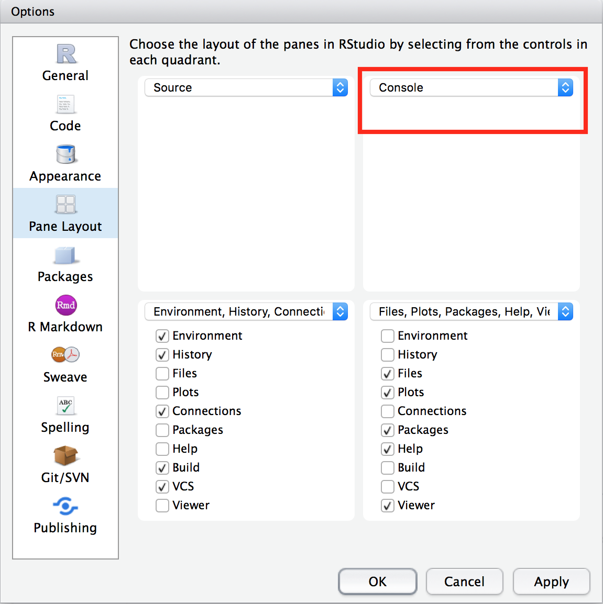
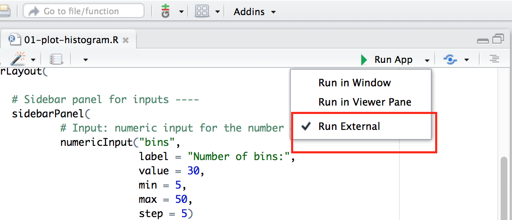
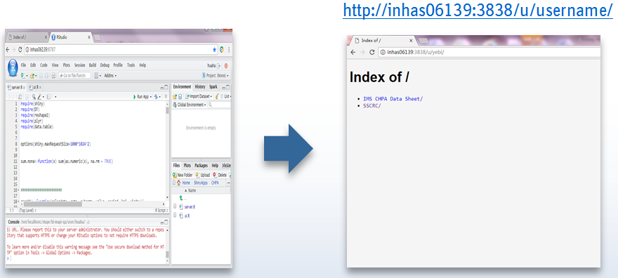

Interactive plots. For example, a bar chart that shows the actual values when you mouse over the bars. A timeseries plot that changes as you select different periods.
Turn your ideas into reality. For example, this app allows you to look up a user's most recent readings on Douban (豆瓣). Notice you can also embed google ads in the app. This app provides a cleaner interface to search restaurants on Tabelog in English.
Embed data analysis in your blog post so that readers can play with the results. Example.
Super easy to run calculations under different scenarios or statistical procedures with different input parameters. For example, calculate sample sizes in multi-regional clinical trials.
Train and backtest various models, compare results and generate reports. For example, here's an app that does all of that for survival models.
You can build an entire product/SaaS platform using Shiny. Example.
Shiny = statistical (R) programming + web technologies.
It allows statisticians who don't know web technologies to easily make and publish interactive web apps.

When naming,
# Good: student <- 25 foo.R, # Bad: because of Uppercased 1st letter Student <- 25 Foo.R
# Good: learn_shiny <- function(start, end) # Bad: because of camelCase learnShiny<- function(start, end)
pkgs = c("shiny", "shinydashboard"
# , "plotly"
)
for (pkg in pkgs) {
if (!pkg %in% installed.packages()) {
cat(paste(pkg, "missing, will attempt to install\n"))
install.packages(pkg)
} else cat(paste(pkg, "installed OK\n"))
}
Open examples/00-hello-world-boring.R in Rstudio.

Click Run App.
library(shiny)
# make UI ---
ui <- fluidPage(
titlePanel("Hello World!")
)
# make server ---
server <- function(input, output) {}
# make Shiny app ----
shinyApp(ui = ui, server = server)
Run examples/01-hello-world.R
# make UI ---
ui <- fluidPage(
titlePanel("Hello World!"),
mainPanel(
textInput("my_name",
label = "Enter your name:",
value = "Harry"),
textOutput("self_intro")
)
)
# make server ---
server <- function(input, output) {
output$self_intro = renderText(
paste("My name is", input$my_name)
)
}
Run examples/01-hello-world-w-sidebar.R
ui <- fluidPage(
titlePanel("Hello World!"),
sidebarLayout(
sidebarPanel(
textInput("my_name",
label = "Enter your name:",
value = "Harry")
),
mainPanel(
textOutput("self_intro")
)
)
)
Complete exercises/01-plot-histogram.R together.
server <- function(input, output) {
1. takes user supplied values from input
2. run computation
3. return or display results through output
}

The Server keeps monitoring the UI. Whenever there is a change in the UI, the Server will follow some instructions (run some R code) accordingly and update the UI's display.